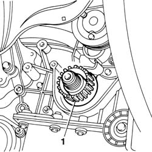
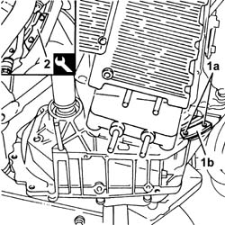
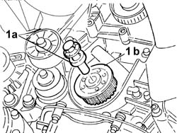
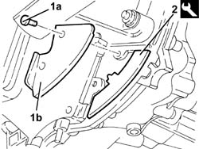
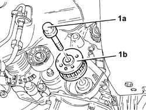

1032B47 toothed drive pulley - r r for versions with air conditioner
- Path
- Procedures > 10 ENGINE > 1032 TIMING SYSTEM > 1032B belt timing system > 1032B47 toothed drive pulley - r r for versions with air conditioner
- Kind
- repair procedure (removal / refitting; the operation number is the code)
- Applies to
- engines: 1.6 TS , 1.8 TS, 2.5 V6, 3.2 V6, 1.9 JTD 8v , 2.4 JTD 10v; all production periods
- Interactive page
- https://sloeber94.github.io/elrnDB-a156/en/#/3237491
Applies to: engines: 2.5 V6, 3.2 V6; all production periods
 Removing
Removing
 Refitting
Refitting4450B10 Front WHEEL (one) - R.R.
7055B64 Engine compartment DUST shield in front wheel arch (one), left or right - R.R.
1092G10 single engine belt r r
1092A10 Crankshaft services PULLEY - R.R.
1032D12 timing system protective cover(s) - r + r
1. Remove the toothed drive pulley.

Applies to: engines: 2.5 V6, 3.2 V6; all production periods
Refitting
RemovingCheck that the key is present and in the correct position.
Fit the toothed drive pulley.
Carry out op. 1016A42 left hand cylinder head ignition coil cover - r+r
Carry out op. 1072B50 sleeves connecting air capacity box to inlet manifold is - r+r
Carry out op. 5510C14 ignition coil/s - r+r
Carry out op. 1016A36 left hand and right hand cam cover - r+r
1016A36 left hand and right hand cam cover - r+r
1072B50 sleeves connecting air capacity box to inlet manifold is - r+r
1016A42 left hand cylinder head ignition coil cover - r+r
1032D12 timing system protective cover(s) - r + r
1092A10 Crankshaft services PULLEY - R.R.
1092G10 single engine belt r r
7055B64 Engine compartment DUST shield in front wheel arch (one), left or right - R.R.
Applies to: engines: 1.6 TS , 1.8 TS; all production periods
Removing
RefittingPlace the car on the lifting bridge.
4450B10 Front WHEEL (one) - R.R.
7055B64 Engine compartment DUST shield in front wheel arch (one), left or right - R.R.
7055B54 under-engine guard - r r
1016A40 ignition coil cover on cylinder head- r+r
1016A20 single cam cover - r + r and replace gasket
1092G10 single engine belt r r
1092G20 engine component single belt fixed tensioner - one - r + r
1092A12 crankshaft pulley - r+r for versions with air conditioner
Applies to: all engines; all production periods
1092E10 counter-rotating shaft drive toothed belt - r + r
1092E20 counter-rotating shaft drive toothed belts drive pulley - r + r with toothed belt removed
Applies to: engines: 1.6 TS , 1.8 TS; all production periods
1. Unscrew screws (1a) and remove protecting cover (1b).
2. Fit tool fastening flywheel.
 | Name | Country |
|---|---|---|
2 | Counter-torque | 1.820.630.000 |

Applies to: engines: 1.6 TS , 1.8 TS; all production periods
1. Unscrew L-H screw (1a) and remove timing toothed drive pulley (1b).

Applies to: engines: 1.6 TS , 1.8 TS; all production periods
Refitting
RemovingFit timing toothed drive pulley and fix it with its screw to the prescribed torque.
 | Fastening | Component | Ø | Value (daNm) |
|---|---|---|---|---|
- | Bolt with left hand thread | TOOTHED DRIVE PULLEY | M16 | 34.0 ÷ 37.8 |
Remove tool fastening flywheel.
| Name | Country |
|---|---|---|
- | Counter-torque | 1.820.630.000 |
Fit cover protecting flywheel and fix it with its screws.
Applies to: all engines; all production periods
1092E20 counter-rotating shaft drive toothed belts drive pulley - r + r with toothed belt removed
Applies to: engines: 1.6 TS , 1.8 TS; all production periods
1032D12 timing system protective cover(s) - r + r
1092A12 crankshaft pulley - r+r for versions with air conditioner
1092G20 engine component single belt fixed tensioner - one - r + r
1092G10 single engine belt r r
1016A20 single cam cover - r + r and replace gasket
1016A40 ignition coil cover on cylinder head- r+r
7055B54 under-engine guard - r r
7055B64 Engine compartment DUST shield in front wheel arch (one), left or right - R.R.
4450B10 Front WHEEL (one) - R.R.
Take the car off the lifting bridge.
Applies to: engines: 1.9 JTD 8v ; all production periods
Removing
Refitting1008C10 power unit upper reaction link r r
1016A10 sound-proofing cover - r + r .
1008C14 engine link bracket - r r
4450B10 Front WHEEL (one) - R.R.
7055B64 Engine compartment DUST shield in front wheel arch (one), left or right - R.R.
1092G10 single engine belt r r
1092A12 crankshaft pulley - r+r for versions with air conditioner
1. Undo bolts (1a) and remove protection (1b).
2. Fit the tool.
| Name | Country |
|---|---|---|
2 | Counter-torque | 1.820.630.000 |

Applies to: engines: 1.9 JTD 8v ; all production periods
1. Undo the bolt (1a) and remove the drive pulley (1b).

Applies to: engines: 1.9 JTD 8v ; all production periods
Refitting
RemovingFit the drive pulley and fix it tightening the bolt to the recommended torque.
| Fastening | Component | Ø | Value (daNm) |
|---|---|---|---|---|
- | Bolt with left hand thread | TOOTHED DRIVE PULLEY | M16 | 30.6 - 37.8 |
Remove the tool.
| Name | Country |
|---|---|---|
- | Counter-torque | 1.820.630.000 |
Fit the guard and secure with its bolts.
1092A12 crankshaft pulley - r+r for versions with air conditioner
1092G10 single engine belt r r
7055B64 Engine compartment DUST shield in front wheel arch (one), left or right - R.R.
4450B10 Front WHEEL (one) - R.R.
1008C14 engine link bracket - r r
Applies to: engines: 2.4 JTD 10v; all production periods
Removing
Refitting4450B10 Front WHEEL (one) - R.R.
7055B64 Engine compartment DUST shield in front wheel arch (one), left or right - R.R.
1092G10 single engine belt r r
1092A12 crankshaft pulley - r+r for versions with air conditioner
1032D12 timing system protective cover(s) - r + r
1008C10 power unit upper reaction link r r .
1016A10 sound-proofing cover - r + r .
1008C14 engine link bracket - r r
1032B44 toothed drive pulley - r + r with timing belt removed
Applies to: engines: 2.4 JTD 10v; all production periods
Refitting
Removing1032B44 toothed drive pulley - r + r with timing belt removed
1008C14 engine link bracket - r r
1016A10 sound-proofing cover - r + r .
1008C10 power unit upper reaction link r r .
1032D12 timing system protective cover(s) - r + r
1092A12 crankshaft pulley - r+r for versions with air conditioner
1092G10 single engine belt r r
7055B64 Engine compartment DUST shield in front wheel arch (one), left or right - R.R.
Topics linked from this page (21)
- 1008C10 power unit upper reaction link r r
- 1008C14 engine link bracket - r r
- 1016A10 sound-proofing cover - r + r
- 1016A20 single cam cover - r + r and replace gasket
- 1016A36 left hand and right hand cam cover - r+r
- 1016A40 ignition coil cover on cylinder head- r+r
- 1016A42 left hand cylinder head ignition coil cover - r+r
- 1032B14 toothed timing belt - r + r for timing adjustment or replacement versions with air conditioner
- 1032B44 toothed drive pulley - r + r with timing belt removed
- 1032D12 timing system protective cover(s) - r + r
- 1072B50 sleeves connecting air capacity box to inlet manifold is - r+r
- 1092A10 Crankshaft services PULLEY - R.R.
- 1092A12 crankshaft pulley - r+r for versions with air conditioner
- 1092E10 counter-rotating shaft drive toothed belt - r + r
- 1092E20 counter-rotating shaft drive toothed belts drive pulley - r + r with toothed belt removed
- 1092G10 single engine belt r r
- 1092G20 engine component single belt fixed tensioner - one - r + r
- 4450B10 Front WHEEL (one) - R.R.
- 5510C14 ignition coil/s - r+r
- 7055B54 under-engine guard - r r
- 7055B64 Engine compartment DUST shield in front wheel arch (one), left or right - R.R.
Topics that link to this page (4)
- 1020D14 front crank shaft oil seal cover - r + r and replace seals for versions with oil pump on crank shaft, timing side
- 1020D16 front crankshaft oil seal cover - r+r and replace gaskets for versions with airconditioner
- 1020D18 front crank shaft cover oil seal - replace
- 1032B46 toothed drive pulley - r + r